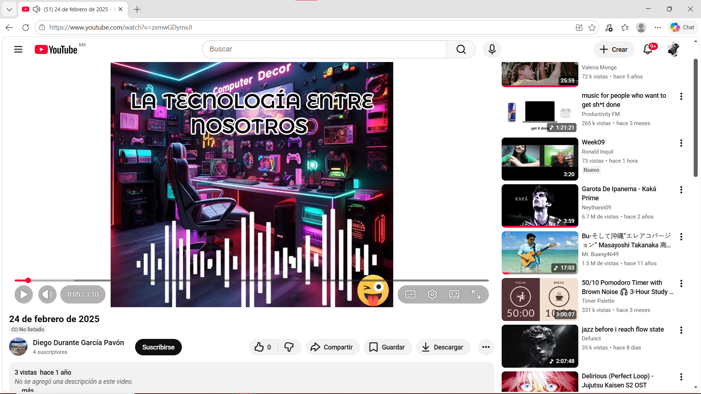
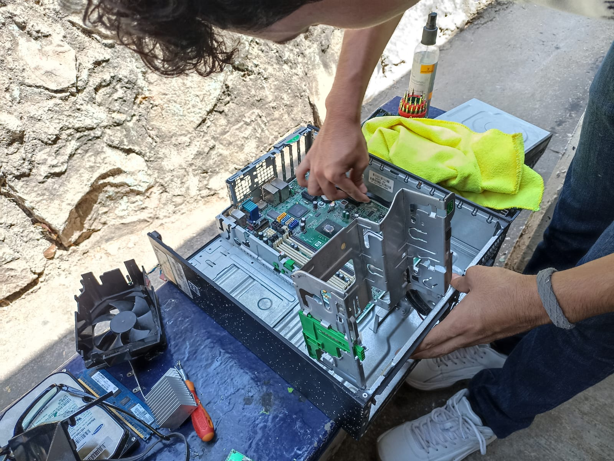
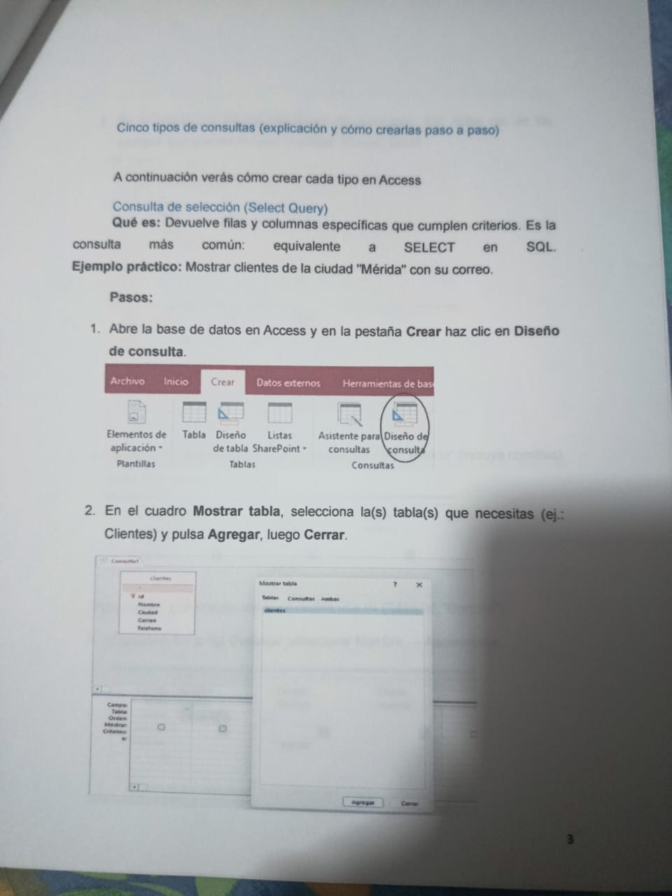
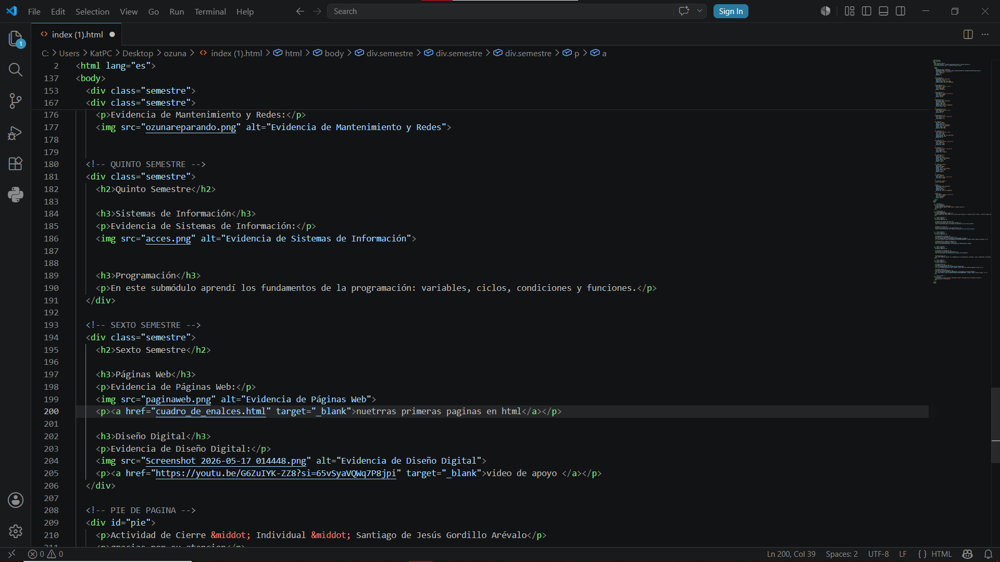

Cuarto Semestre
Comunidades Virtuales
Evidencia de Comunidades Virtuales:

Mantenimiento y Redes de Cómputo
Evidencia de Mantenimiento y Redes:

Quinto Semestre
Sistemas de Información
Evidencia de Sistemas de Información:

base de datps
En este submódulo aprendí los fundamentos de las bases de datos.
Sexto Semestre
Páginas Web
Evidencia de Páginas Web:

nuestras primeras paginas en html
Diseño Digital
Evidencia de Diseño Digital:

pagina web· 21 de mayo · DIEGO DURANTE GARCIA PAVON/p>
gracias por todo